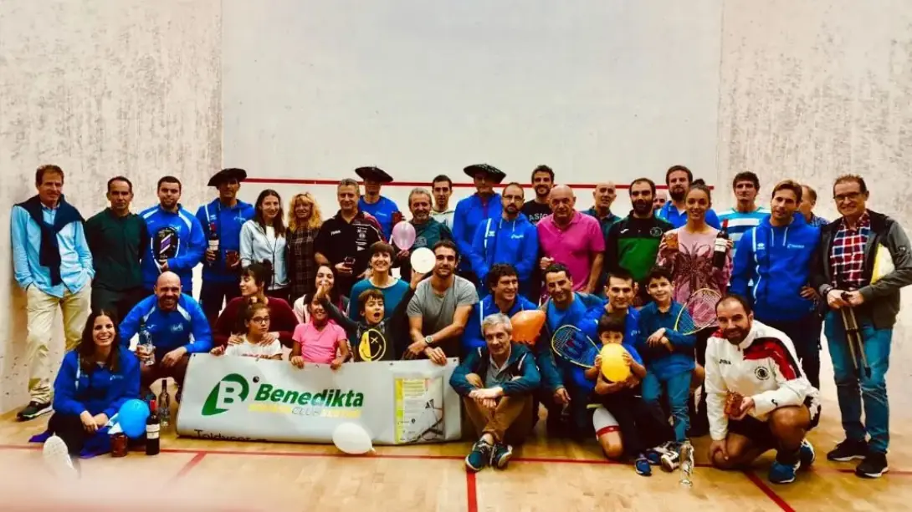

What Are Graded Squash Tournaments?
Nobody wants to play a tournament and then play against players that are either way to good for them or way worse than them. Graded tournament address that issue.
Back when I lived in the UK and played Squash competitively, there was a graded tournament almost every weekend somewhere in the country. That meant, any time I wanted to meet new people, visit new facilities and play some tough squash, I could. I have said it before, and I will keep saying it: playing competitively is great for your squash and others agree.
A Quick Reddit Thread
In fact, let’s take a moment to quote from some players over on reddit. I posted a question about experiences of playing competitively. asmos57 put it very nicely: “Having shaky knees the first times I participated in tournaments was a nice feeling. Difficult at first, but it helped my mental game a lot. And I think it’s very useful to play different opponents with different styles.” While sixthcupofjoe mentions the motivating factor: “It’s also really addictive getting your rank up going up a grade and moving up divs.” Other things mentioned include making new friends (yes, sounds cheesy, but really can be true), and visiting better facilities than yours and then feeling bad.
It wasn’t all sunshine and rainbows though (An English phrase meaning nice things). A few people complained about having to referee matches. Sometimes you get arseholes who question every decision you make. Wilkox79 mentioned that they stopped playing competitive squash specifically for this reason, which is sad: “The negative (refereeing) put me off competitive squash a few years ago and although I miss some aspects (especially team squash) I’ve never really regretted stopping“.
The Wonderful people at Benedikta Squash Club
Back To The Tournaments
They may be called different things in different countries (please let me know what they are called in your country), but “graded” is what I have always called them. When I played there were N, A, B, C, D and E (maybe F, I’m not sure). At the time, N stood for National and you needed to have a national ranking to play this grade, although they sometimes let A players play – but not everybody used the N grade, some just stuck to the alphabetical order, with A being the best in the country.
Nowadays, I believe many organiser and tournaments use the SquashLevels system to accurately assess each players grade. What’s important is that when you sign up for these types of tournaments, you know that you are going to get to play against people of your standard. It’s very disheartening for new players to find themselves against somebody much better. Nobody benefits from those situations.
Where I live, The Basque Country (see the first image!), we don’t really use the graded system, but the organisers know everybody so everybody gets good games throughout the weekend and everybody has a lot of fun. If somebody new comes along, they are given matches that fit their standard.

Graded Tournaments are lots of fun.
A Typical Graded Tournament
A typical graded tournament either starts on Friday evening or Saturday morning. For a modest fee, about 10 Euros where I live, you get a T shirt, often with the tournament’s logo, snacks and about 4 matches. Even if you lose your first match, you still get 4 matches – of course a lot depends on how many people entered and other factors, but the organisers try to get you at least 4.
Sometimes there are free snacks, occasionally a stringer is available and I have even seen a masseuse available too. The atmosphere is both friendly AND competitive and once you have gone to a few, they it’s really a family spirit. Depending on the numbers or players, some graded squash tournaments mix the woman with the men, other separate if possible.
However, the negative aspect for some is that you are required to mark the next match on court if you lose. It has to be that way, because there are not enough people to mark matches otherwise. It can be daunting to mark your first match, but there will always be people around to help you. I won’t lie to you, some players can be rude and mean when they play squash, and marking is not always a pleasant experience, but it *is* a valuable one.Final Thoughts
I recognise and respect that not everybody wants to play competitive squash. If you want to play once or twice a week with the same people or just at a local club night, that’s great. All that matters is that you play squash and enjoy yourself. BUT, if you want to take your squash to the next level, get out of your comfort zone (which is where real improvement happens), then a graded squash tournament is the perfect solution.
Depending on where you live, finding one shouldn’t be too hard. Still not convince? Why not go along just to see the atmosphere? Don’t enter the tournament, just visit the club for an hour or so to get the feel of it.
Continue Reading
• Previous: Don’t Warm Up Before You Play Squash – HEAT UP!
• Next: What Is The Perfect Practice Duration?
• Random: Take A Chance!
• Popular: Things To Know Before You Have Coaching